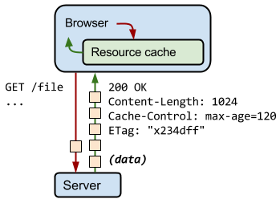

Di situasi seperti pandemic seperti sekarang ini, informasi online merupakan cara paling efektif untuk mengetahui perkembangan terakhir dari situasi COVID-19. Website mudah di-update, cukup melakukan update di server, pengunjung langsung mendapatkan informasi terkini pada saat mengakses website tersebut. Namun tidak jarang beberapa website tidak siap menerima lonjakan pengunjung yang lebih banyak dari biasanya sehingga membuat pengunjung tidak mendapatkan informasi yang mereka inginkan. Kita sebagai pengembang website harusnya bisa memberikan layanan yang lebih optimal agar website kita tetap bisa memberikan informasi yang dibutuhkan oleh pengguna. Untuk itu berikut adalah beberapa checklist yang kalian bisa lakukan untuk memastikan website kalian tetap optimal dalam menyajikan informasi yang dibutuhkan oleh pengguna.
1. Memeriksa penyebab server kelebihan beban.
Tidak jarang sebuah website tidak tersedia karena server kelebihan beban. Dan tentunya cara paling gampang adalah meningkatkan kapasitas server, namun tentu ini berdampak pada biaya server dimana tidak semua pengembang memilih opsi ini. Sebelum memutuskan menambah kapasitas server, pengembang tentunya harus memastikan apa penyebab server kelebihan beban dan tidak bisa melayani permintaan. Ada 4 hal yang bisa ditelusuri pada server.
Kelebihan beban pada CPU. Pada saat CPU bekerja lebih dari 80% secara terus menerus, besar kemungkinan pada aplikasi kita ada proses/script yang tidak optimal. Coba lakukan profiling untuk melihat pada fungsi atau proses apa yang paling membebani sehingga CPU bekerja keras terus menerus. Biasanya ini terjadi pada server side scripting atau setting cache yang tidak optimal sehingga aplikasi harus mengulang proses yang sebenarnya bisa di-cache.
Kelebihan beban pada memori. Beban pada memori sangat bergantung pada jenis data dan ukuran yang diproses, atau bisa jadi aplikasi yang juga tidak optimal. Lakukan profiling juga untuk mengecek proses atau fungsi mana yang tidak optimal. Terkadang proses caching berpengaruh juga pada kelebihan memori ini.
Kelebihan beban pada penyimpanan. Yang paling sering kejadian selama saya banyak bekerja di backend adalah lupa bahwa pemrosesan file log yang tidak optimal bisa berdampak pada penuhnya kapasitas penyimpanan server dalam waktu singkat terutama pada saat kunjungan sangat tinggi. Atau aplikasi yang dibuat terlalu sering melakukan penulisan ke media penyimpanan yang lebih lambat sehingga menghambat pemrosesan aplikasi.
Kelebihan beban pada koneksi jaringan. Biasanya ini yang paling terakhir kita telusuri terutama kalau kita percaya bahwa server kita berada pada infrastruktur yang baik seperti Google Cloud, AWS, ataupun Microsoft Azure.
2. Mengurangi beban server
Bila 4 hal di atas sudah kita telusuri namun kita tidak menemukan apa yang bisa kita lakukan maka hal lain yang kita bisa lakukan adalah mengurangi beban server yang tidak perlu. Caranya dengan mengurangi permintaan ke server dengan optimalisasi caching atau memindahkan aset statik seperti gambar, font, CSS, dan lainnya ke Content Delivery Network(CDN).
Periksa bila ada aset yang tidak perlukan pada halaman yang digunakan.
Chrome DevTools coverage
Dengan menggunakan Chrome Devtools coverage tool kita bisa melihat apakah ada library atau aset yang tidak diperlukan di suatu halaman website kita. Beberapa hal yang perlu diperhatikan:
* pada saat menggunakan suatu library dan framework, pastikan hanya memasukkan yang memang dibutuhkan. Misalnya jangan sampai memasukkan semua icon bila yang digunakan cuma beberapa icon. Atau melakukan import * bila ternyata yang digunakan hanya beberapa fungsi pada library JavaScript.
* pastikan kalian melakukan minify pada JavaScript untuk mengurangi ukuran dengan menghilangkan space dan komentar yang tidak perlu.
Mengaktifkan HTTP cache yang optimal.
Hal yang kadang dilupakan pengembang adalah tidak melakukan pengaturan HTTP cache di web server secara optimal. Sebagai contoh aset statik seperti gambar, font, CSS, dan JavaScript adalah aset statik yang besar kemungkinan tidak berubah. Dengan melakukan pengaturan HTTP cache yang optimal, maka permintaan ke server akan berkurang karena browser menganggap bahwa aset-aset tersebut tidak berubah dan tidak perlu diminta. Ada 2 HTTP cache header yang perlu diperhatikan yaitu:

HTTP header request
Etag untuk validasi cache di server dengan token. Baca lebih detail tentang Etag dan cara kerja di sini.
Cache-Control untuk mengatur di kondisi bagaimana cache harus direspon, oleh siapa, dan berapa lama. Lebih lanjut bisa baca di sini.
Optimasi ukuran gambar agar pengguna bisa mengakses website lebih cepat.
Gunakan service worker agar website lebih optimal menangani permintaan ke server.
Dengan service worker kita bisa mengontrol bagaimana aplikasi kita merespon seandainya server tidak memberikan respon yang seharusnya. Misalnyanya khusus untuk aset statik kita bisa memastikan untuk selalu mengambil dari cache terlebih dahulu tanpa harus mengecek ke server.
Atau seandainya permintaan data pada API tidak mendapat respon karena API server kelebihan beban, maka aplikasi kita bisa membuat respon ke pengguna untuk menunggu dan mengecek secara berkala ke server lalu membuat notifikasi ke pengguna seandainya data yang diminta sudah siap ditampilkan. Dengan demikian pengalaman pengguna masih bisa kita kontrol walaupun server tidak memberikan respon seharusnya.
Pindahkan aset statis ke Content Delivery Network(CDN).
Dengan memindahkan aset statik seperti gambar, font, JavaScript ke CDN seperti Cloudinary, Akamai, dan lainny, maka secara otomotis beban server akan berkurang untuk melayani permintaan aset statik ini. Beberapa CDN juga memberikan layanan tambahan seperti optimasi gambar, perubahan ukuran, dan cropping otomatis sesuai kebutuhan layout.
3. Pastikan pengguna bisa mengakses konten dan mendapatkan informasi yang diinginkan.
Itulah beberapa langkah yang kalian bisa lakukan untuk memastikan website kalian bisa tetap tersedia. Tapi memastikan website kalian tetap tersedia dan bisa digunakan oleh pengguna tidaklah cukup. Tentunya kalian harus memastikan pengguna bisa menggunakan website kalian dan mendapatkan informasi yang mereka inginkan. Hal lain yang perlu kalian perhatikan adalah:
Aksesibilitas website.
Kalian bisa mulai dari memahami aksesibilitas website itu seperti apa. Dan lakukan audit Lighthouse untuk melihat apakah website kalian cukup baik dari sisi aksesibilitas. Lebih detail terkait aksesibilitas ini silakan membaca panduan lengkapnya.
Keamanan akses dan informasi.
Pastikan website diakses sepenuhnya di protokol HTTPS untuk menghindari adanya perubahan informasi ataupun pencurian data. Pelajari lebih lanjut mengapa HTTPS sangat penting. Pastikan juga untuk melakukan redirect HTTP ke HTTPS karena terkadang beberapa browser belum mewajibkan HTTPS secara default.
Pengaturan cookies memastikan aset pihak ketiga tetap bekerja.
Bila kalian menggunakan layanan pihak ketiga seperti iklan, analytics, payment gateway, dan lainnya, pastikan kalian memeriksa layanan tersebut apakah sudah menyesuaikan dengan perubahan privasi pada pengaturan cookie. Karena browser akan mencegah layanan pihak ketiga tersebut berjalan bila tidak menyesuaikan dengan pengaturan privasi dengan pihak ketiga melalui cookie pada browser.
Tampilan yang baik dan kenyamanan pengguna.
Memahami apa yang pengguna inginkan dan memastikan mereka bisa mendapatkan hal tersebut dengan mudah adalah hal terpenting dalam membangun sebuah aplikasi. Kalian bisa mempelajari bagaimana hal tahapan pengguna mencari yang mereka inginkan dan bantu mereka agar bisa mendapatkannya dengan mudah. Hal-hal yang kalian bisa lakukan beberapa di antaranya:
* Pastikan website kalian nyaman dibuka di layar ukuran apa saja, seperti di mobile atau di desktop. Layout halaman harus bisa responsive dan menyesuaikan tergantung ukuran layar.
* Loading halaman yang cepat dan menyajikan konten atau yang dicari oleh pengguna. Tampilan yang dimuat terlalu lama membuat pengguna akan pergi karena tidak sabar menunggu.
* Terapkan prisip dasar tampilan yang baik dan pengalaman pengguna yang baik.
Penutup
Terlepas dari 3 hal di atas, tentunya kita juga harus melakukan monitoring apakah langkah-langkah yang kita lakukan memang meningkatkan kenyamanan pengguna. Hal ini bisa kita ukur dengan melihat metrik interaktifitas di analytics seperti jumlah halaman, durasi dalam satu sesi, ataupun menggunakan metrik teknis dari Lighthouse.
Lebih detail terkait hal-hal di atas silakan membaca lebih lanjut referensi berikut: